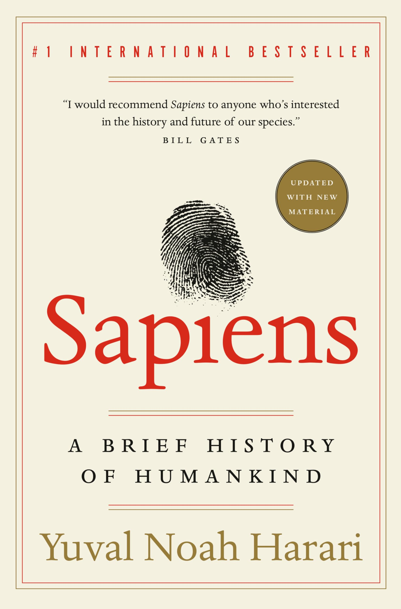

I took a trip to Japan in around 3-4 years ago, visiting my undergraduate roommate living in Osaka. During the trip, I visited Osaka, Chiba, and Kyoto. I enjoyed food, such as ramen, takoyaki, etc.
My favorite restaurant is Shake Shack, because I love their burgers with mushrooms.
I absolutely love Biangbiang Mian. I like to stir it and add more chili
sauce with it.
It is one of those comfort foods that always makes
me feel at home.
| Quan Zhi Gao Shou | Hudie Lan | It is a novel describing professional gamers and their trip to the championship. | |
| The Devotion of Suspect X | Keigo Higashino | It is suspect novel and it describs a seems to be impossible crime scene. | |
| The Three-Body Problem | Cixin Liu | It is a Sci-Fi novel and describes people facing aliens and other problems that may cause disasters to the humankind. | |
| A Brief History of Humankind |  | Yuval Noah Harari | The book traces the origin and the evolotuion of humankind and its society. |